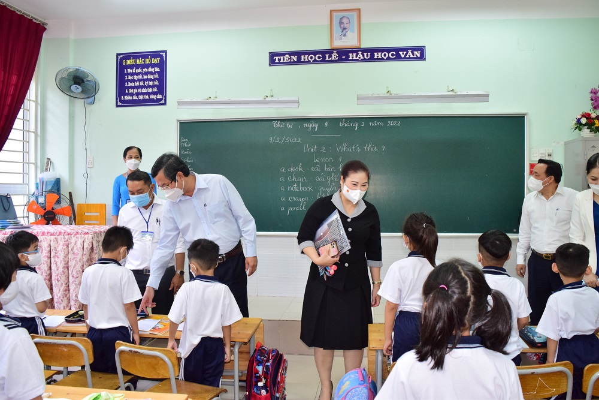

Kỉ niệm 40 năm thành lập trường
TIN TỨC - SỰ KIỆN
Ngày 9/2, đoàn công tác của Bộ Giáo dục và Đào tạo (GDĐT) do Thứ trưởng Nguyễn Văn Phúc dẫn đầu đã tới kiểm tra công tác tổ chức hoạt động dạy học trực tiếp trở lại tại tỉnh Bình .

Ngày 9/2, đoàn công tác của Bộ Giáo dục và Đào tạo (GDĐT) do Thứ trưởng Nguyễn Văn Phúc dẫn đầu đã tới kiểm tra công tác tổ chức hoạt động dạy học trực tiếp trở lại tại tỉnh Bình .
Bản đồ vị trí